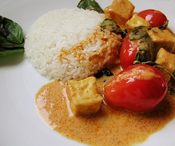

Roter Thaicurry
5 von 6den curry in oel anbraten. mit zwei dosen kokussnussmilch ablöschen. 2 zitronengras stengel
4-5 limettenblätter beigeben. etwas palm zucker und ca. 2 löffel fischsauce dazu. etwas warten.
Dann poulet geschnetzteltes rein. 3 min vor schluss noch cherry tomaten. pfanne vom herd nehmen
und ein bund thai-basilikum beigeben.
